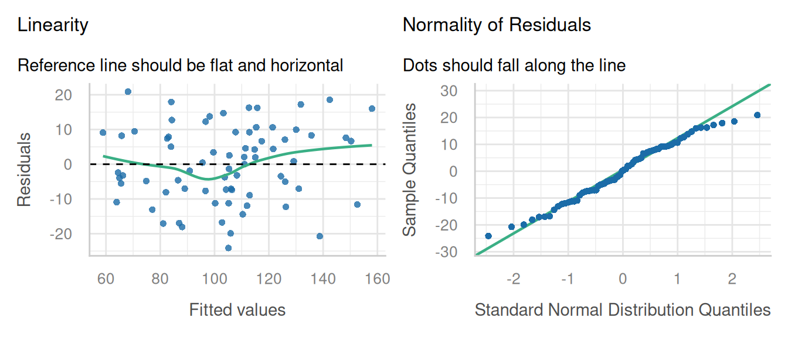
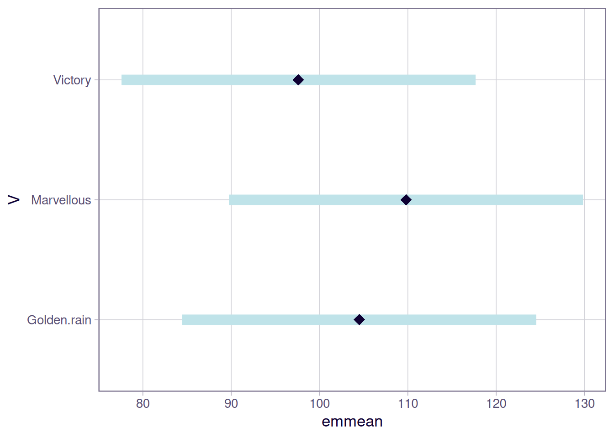
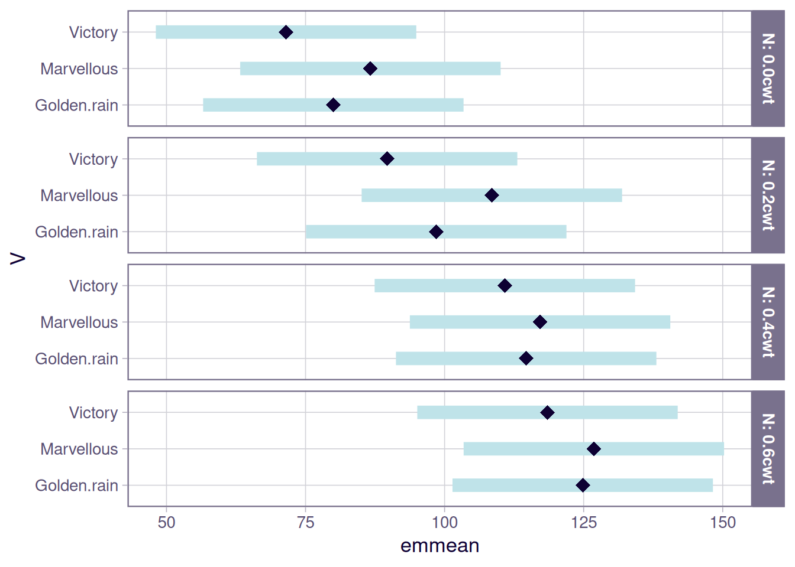
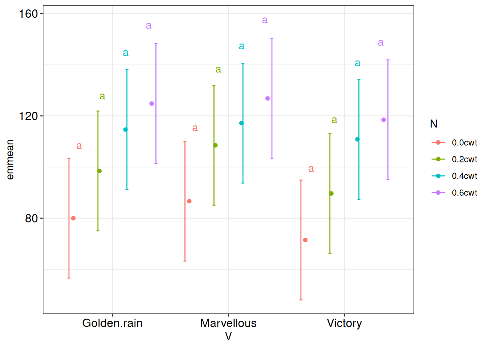
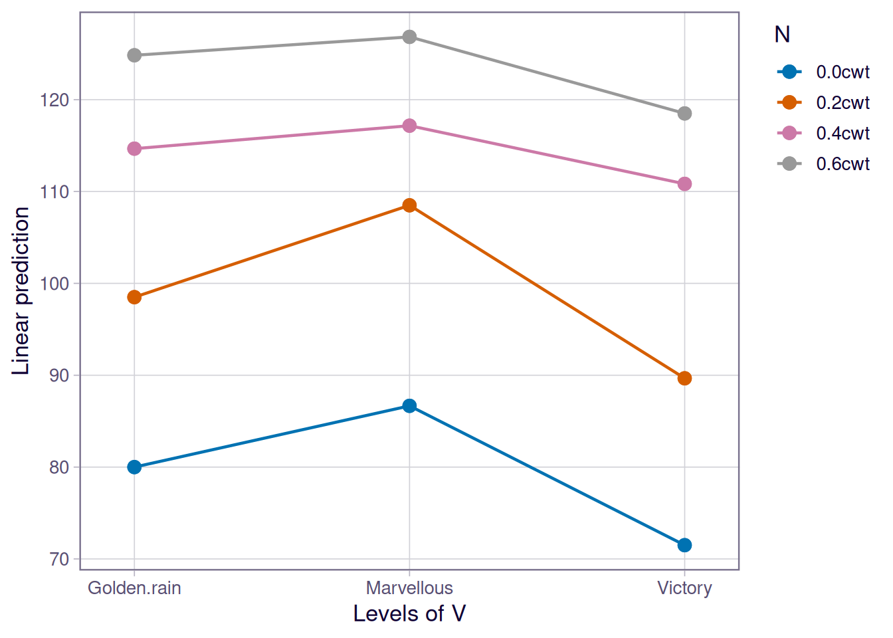

library(nlme); library(performance); library(emmeans)
library(dplyr); library(broom.mixed); library(multcompView)
library(multcomp); library(ggplot2)13 Marginal Means & Contrasts
13.1 Background
Estimated marginal means are the means of a response variable averaged across all levels of other variables in a model, conditioned on the variance-covariance matrix. That is to say, these are much more than plain averages. The ‘emmeans’ package is one of the most commonly used package in R for determining marginal means (also known as least squares means). In this chapter, we will demonstrate the use of the ‘emmeans’ package to calculate estimated marginal means and confidence intervals and conduct post hoc comparisons.
To demonstrate the use of the ‘emmeans’ package. We will use the model from split plot lesson (Chapter 7), where we evaluated the effect of nitrogen and variety on oat yield. This data contains six blocks, three main plots (Variety) and four subplots (Nitrogen). The dependent variable was oat yield. To read more about the experiment layout details please read RCBD split-plot section in Chapter 7.
NoteMarginal means using lmer and nlme
For demonstration of the emmeans package, we are fitting model with nlme package. Please note that code below calculating marginal means works for both lmer() and nlme() models.
13.2 Set Up Analysis
Let’s start this example by loading the required libraries for fitting linear mixed models using nlme package.
13.2.1 Import data
Next step is to import the oats data from the MASS package.
data1 <- MASS::oatsTo read more about data and model explanation please refer to Chapter 7.
13.2.2 Model fitting
m1 <- lme(Y ~ V*N,
random = ~1|B/V,
data = data1,
na.action = na.exclude)
tidy(m1)# A tibble: 12 × 7
effect term estimate std.error df statistic p.value
<chr> <chr> <dbl> <dbl> <dbl> <dbl> <dbl>
1 fixed (Intercept) 80 9.11 45 8.78 2.56e-11
2 fixed VMarvellous 6.67 9.72 10 0.686 5.08e- 1
3 fixed VVictory -8.5 9.72 10 -0.875 4.02e- 1
4 fixed N0.2cwt 18.5 7.68 45 2.41 2.02e- 2
5 fixed N0.4cwt 34.7 7.68 45 4.51 4.58e- 5
6 fixed N0.6cwt 44.8 7.68 45 5.84 5.48e- 7
7 fixed VMarvellous:N0.2cwt 3.33 10.9 45 0.307 7.60e- 1
8 fixed VVictory:N0.2cwt -0.333 10.9 45 -0.0307 9.76e- 1
9 fixed VMarvellous:N0.4cwt -4.17 10.9 45 -0.383 7.03e- 1
10 fixed VVictory:N0.4cwt 4.67 10.9 45 0.430 6.70e- 1
11 fixed VMarvellous:N0.6cwt -4.67 10.9 45 -0.430 6.70e- 1
12 fixed VVictory:N0.6cwt 2.17 10.9 45 0.199 8.43e- 113.2.3 Check Model Assumptions
check_model(m1, check = c('qq', 'linearity'), detrend = FALSE, alpha = 0)
Residuals look good with a small hump in middle and normality curve looks reasonable.
13.3 Estimated Marginal Means
Now that we have fitted a linear mixed model (m1) and it meets the model assumptions, we can use the emmeans() function to obtain estimated marginal means for main effects (variety and nitrogen) and interaction (variety-by-nitrogen).
13.3.1 Main effects
The main effects in m1 were V and N.
emm1 <- emmeans(m1, ~ V, level = 0.95)NOTE: Results may be misleading due to involvement in interactionsemm1 V emmean SE df lower.CL upper.CL
Golden.rain 104.5 7.8 5 84.5 125
Marvellous 109.8 7.8 5 89.7 130
Victory 97.6 7.8 5 77.6 118
Results are averaged over the levels of: N
Degrees-of-freedom method: containment
Confidence level used: 0.95 emm2 <- emmeans(m1, ~ N)NOTE: Results may be misleading due to involvement in interactionsemm2 N emmean SE df lower.CL upper.CL
0.0cwt 79.4 7.17 5 60.9 97.8
0.2cwt 98.9 7.17 5 80.4 117.3
0.4cwt 114.2 7.17 5 95.8 132.7
0.6cwt 123.4 7.17 5 104.9 141.8
Results are averaged over the levels of: V
Degrees-of-freedom method: containment
Confidence level used: 0.95 These are the model estimated marginal means. By package design, they are labelled “emmeans” in the column header. The columns “SE” and “df” provide the standard error and degrees of freedom, which are used to provide the lower and upper confidence limits (“lower.CL” and “upper.CL”, respectively). The default is a 95% confidence interval, but this can be set in the emmeans() call.
Make sure to read and interpret marginal means carefully. Here, when we calculated marginal means for main effects of V and N, these were averaged over the levels of other factor in experiment. That is, estimated means for each N treatment level was averaged over levels of variety.
13.3.2 Interaction effects
The interaction effect of V and N can be calculated either using V*N or V|N syntax.
emm3 <- emmeans(m1, ~V|N)
emm3N = 0.0cwt:
V emmean SE df lower.CL upper.CL
Golden.rain 80.0 9.11 5 56.6 103.4
Marvellous 86.7 9.11 5 63.3 110.1
Victory 71.5 9.11 5 48.1 94.9
N = 0.2cwt:
V emmean SE df lower.CL upper.CL
Golden.rain 98.5 9.11 5 75.1 121.9
Marvellous 108.5 9.11 5 85.1 131.9
Victory 89.7 9.11 5 66.3 113.1
N = 0.4cwt:
V emmean SE df lower.CL upper.CL
Golden.rain 114.7 9.11 5 91.3 138.1
Marvellous 117.2 9.11 5 93.8 140.6
Victory 110.8 9.11 5 87.4 134.2
N = 0.6cwt:
V emmean SE df lower.CL upper.CL
Golden.rain 124.8 9.11 5 101.4 148.2
Marvellous 126.8 9.11 5 103.4 150.2
Victory 118.5 9.11 5 95.1 141.9
Degrees-of-freedom method: containment
Confidence level used: 0.95 emm4 <- emmeans(m1, ~V*N)
emm4 V N emmean SE df lower.CL upper.CL
Golden.rain 0.0cwt 80.0 9.11 5 56.6 103.4
Marvellous 0.0cwt 86.7 9.11 5 63.3 110.1
Victory 0.0cwt 71.5 9.11 5 48.1 94.9
Golden.rain 0.2cwt 98.5 9.11 5 75.1 121.9
Marvellous 0.2cwt 108.5 9.11 5 85.1 131.9
Victory 0.2cwt 89.7 9.11 5 66.3 113.1
Golden.rain 0.4cwt 114.7 9.11 5 91.3 138.1
Marvellous 0.4cwt 117.2 9.11 5 93.8 140.6
Victory 0.4cwt 110.8 9.11 5 87.4 134.2
Golden.rain 0.6cwt 124.8 9.11 5 101.4 148.2
Marvellous 0.6cwt 126.8 9.11 5 103.4 150.2
Victory 0.6cwt 118.5 9.11 5 95.1 141.9
Degrees-of-freedom method: containment
Confidence level used: 0.95
NoteSpecifying Interactions
Here, note that estimated marginal means can be provided in two ways:
V*Nestimates the marginal means for each combination of levels across these variables, and downstream comparisons are conducted across all levels along with a p-value adjustment for multiple testing. Depending on your research aims, this may or may not be a desirable attribute.V|Nestimates the marginal means for each V at a given level of N. When conducting comparisons on these results, the comparison are stratified within “N”, the variable to the right of the vertical line. Depending on the researcher’s goal, the opposite relationship can be specified:N|Vwhere downstream contrasts (and ) are stratified by “V”. There is no difference between the estimates themselves, only in how downstream contrasts are conducted.
13.4 Contrasts using emmeans
13.4.1 Pairwise
The pairs() function from the emmeans package can be used to evaluate pairwise comparisons among treatment factors. The emmeans object (m1) will be passed through the pairs() function, which will provide a p-value adjustment equivalent to the Tukey test.
pairs(emm2, adjust = "tukey") contrast estimate SE df t.ratio p.value
0.0cwt - 0.2cwt -19.50 4.44 45 -4.396 0.0004
0.0cwt - 0.4cwt -34.83 4.44 45 -7.853 <0.0001
0.0cwt - 0.6cwt -44.00 4.44 45 -9.919 <0.0001
0.2cwt - 0.4cwt -15.33 4.44 45 -3.457 0.0064
0.2cwt - 0.6cwt -24.50 4.44 45 -5.523 <0.0001
0.4cwt - 0.6cwt -9.17 4.44 45 -2.067 0.1797
Results are averaged over the levels of: V
Degrees-of-freedom method: containment
P value adjustment: tukey method for comparing a family of 4 estimates pairs(emm3)N = 0.0cwt:
contrast estimate SE df t.ratio p.value
Golden.rain - Marvellous -6.67 9.72 10 -0.686 0.7766
Golden.rain - Victory 8.50 9.72 10 0.875 0.6673
Marvellous - Victory 15.17 9.72 10 1.561 0.3057
N = 0.2cwt:
contrast estimate SE df t.ratio p.value
Golden.rain - Marvellous -10.00 9.72 10 -1.029 0.5762
Golden.rain - Victory 8.83 9.72 10 0.909 0.6470
Marvellous - Victory 18.83 9.72 10 1.939 0.1783
N = 0.4cwt:
contrast estimate SE df t.ratio p.value
Golden.rain - Marvellous -2.50 9.72 10 -0.257 0.9643
Golden.rain - Victory 3.83 9.72 10 0.395 0.9184
Marvellous - Victory 6.33 9.72 10 0.652 0.7955
N = 0.6cwt:
contrast estimate SE df t.ratio p.value
Golden.rain - Marvellous -2.00 9.72 10 -0.206 0.9770
Golden.rain - Victory 6.33 9.72 10 0.652 0.7955
Marvellous - Victory 8.33 9.72 10 0.858 0.6775
Degrees-of-freedom method: containment
P value adjustment: tukey method for comparing a family of 3 estimates The more levels in a variable, the more comparisons that are conducted, reducing statistical power due to the p-value adjustment used to limit type I error.
:::{.callout-note collapse=“false”}} ## P-value adjustment for interactions
pairs() conducts all pairwise tests for the specified variable(s). The default p-value adjustment in the pairs() function is “tukey”; other options include “holm”, “hochberg”, “BH”, “BY”, and “none”. If you are conducting this on a variable with many levels (e.g. more than five), this adjustment can be severe, resulting in very few statistically significant results. To avoid this, use a less conservative adjustment (e.g. ‘sidak’) or choose options that conduct fewer tests (e.g. compare to a control, tailored custom contrasts).
Recall that V*N and V|N produce identical estimates, but differ in how they handle post hoc contrasts. How does this look in practice?
emmeans(m1, pairwise ~ N*V, at = list(V = c("Marvellous", "Victory")))$emmeans
N V emmean SE df lower.CL upper.CL
0.0cwt Marvellous 86.7 9.11 5 63.3 110.1
0.2cwt Marvellous 108.5 9.11 5 85.1 131.9
0.4cwt Marvellous 117.2 9.11 5 93.8 140.6
0.6cwt Marvellous 126.8 9.11 5 103.4 150.2
0.0cwt Victory 71.5 9.11 5 48.1 94.9
0.2cwt Victory 89.7 9.11 5 66.3 113.1
0.4cwt Victory 110.8 9.11 5 87.4 134.2
0.6cwt Victory 118.5 9.11 5 95.1 141.9
Degrees-of-freedom method: containment
Confidence level used: 0.95
$contrasts
contrast estimate SE df t.ratio p.value
0.0cwt Marvellous - 0.2cwt Marvellous -21.83 7.68 45 -2.842 0.1101
0.0cwt Marvellous - 0.4cwt Marvellous -30.50 7.68 45 -3.970 0.0058
0.0cwt Marvellous - 0.6cwt Marvellous -40.17 7.68 45 -5.228 0.0001
0.0cwt Marvellous - 0.0cwt Victory 15.17 9.72 10 1.561 0.7620
0.0cwt Marvellous - 0.2cwt Victory -3.00 9.72 10 -0.309 1.0000
0.0cwt Marvellous - 0.4cwt Victory -24.17 9.72 10 -2.488 0.2982
0.0cwt Marvellous - 0.6cwt Victory -31.83 9.72 10 -3.277 0.1002
0.2cwt Marvellous - 0.4cwt Marvellous -8.67 7.68 45 -1.128 0.9470
0.2cwt Marvellous - 0.6cwt Marvellous -18.33 7.68 45 -2.386 0.2728
0.2cwt Marvellous - 0.0cwt Victory 37.00 9.72 10 3.809 0.0459
0.2cwt Marvellous - 0.2cwt Victory 18.83 9.72 10 1.939 0.5574
0.2cwt Marvellous - 0.4cwt Victory -2.33 9.72 10 -0.240 1.0000
0.2cwt Marvellous - 0.6cwt Victory -10.00 9.72 10 -1.029 0.9585
0.4cwt Marvellous - 0.6cwt Marvellous -9.67 7.68 45 -1.258 0.9091
0.4cwt Marvellous - 0.0cwt Victory 45.67 9.72 10 4.701 0.0126
0.4cwt Marvellous - 0.2cwt Victory 27.50 9.72 10 2.831 0.1889
0.4cwt Marvellous - 0.4cwt Victory 6.33 9.72 10 0.652 0.9967
0.4cwt Marvellous - 0.6cwt Victory -1.33 9.72 10 -0.137 1.0000
0.6cwt Marvellous - 0.0cwt Victory 55.33 9.72 10 5.696 0.0032
0.6cwt Marvellous - 0.2cwt Victory 37.17 9.72 10 3.826 0.0448
0.6cwt Marvellous - 0.4cwt Victory 16.00 9.72 10 1.647 0.7171
0.6cwt Marvellous - 0.6cwt Victory 8.33 9.72 10 0.858 0.9840
0.0cwt Victory - 0.2cwt Victory -18.17 7.68 45 -2.365 0.2833
0.0cwt Victory - 0.4cwt Victory -39.33 7.68 45 -5.120 0.0002
0.0cwt Victory - 0.6cwt Victory -47.00 7.68 45 -6.117 <0.0001
0.2cwt Victory - 0.4cwt Victory -21.17 7.68 45 -2.755 0.1329
0.2cwt Victory - 0.6cwt Victory -28.83 7.68 45 -3.753 0.0108
0.4cwt Victory - 0.6cwt Victory -7.67 7.68 45 -0.998 0.9724
Degrees-of-freedom method: containment
P value adjustment: tukey method for comparing a family of 8 estimates emmeans(m1, pairwise ~ N|V, at = list(V = c("Marvellous", "Victory")))$emmeans
V = Marvellous:
N emmean SE df lower.CL upper.CL
0.0cwt 86.7 9.11 5 63.3 110.1
0.2cwt 108.5 9.11 5 85.1 131.9
0.4cwt 117.2 9.11 5 93.8 140.6
0.6cwt 126.8 9.11 5 103.4 150.2
V = Victory:
N emmean SE df lower.CL upper.CL
0.0cwt 71.5 9.11 5 48.1 94.9
0.2cwt 89.7 9.11 5 66.3 113.1
0.4cwt 110.8 9.11 5 87.4 134.2
0.6cwt 118.5 9.11 5 95.1 141.9
Degrees-of-freedom method: containment
Confidence level used: 0.95
$contrasts
V = Marvellous:
contrast estimate SE df t.ratio p.value
0.0cwt - 0.2cwt -21.83 7.68 45 -2.842 0.0328
0.0cwt - 0.4cwt -30.50 7.68 45 -3.970 0.0014
0.0cwt - 0.6cwt -40.17 7.68 45 -5.228 <0.0001
0.2cwt - 0.4cwt -8.67 7.68 45 -1.128 0.6744
0.2cwt - 0.6cwt -18.33 7.68 45 -2.386 0.0944
0.4cwt - 0.6cwt -9.67 7.68 45 -1.258 0.5938
V = Victory:
contrast estimate SE df t.ratio p.value
0.0cwt - 0.2cwt -18.17 7.68 45 -2.365 0.0988
0.0cwt - 0.4cwt -39.33 7.68 45 -5.120 <0.0001
0.0cwt - 0.6cwt -47.00 7.68 45 -6.117 <0.0001
0.2cwt - 0.4cwt -21.17 7.68 45 -2.755 0.0406
0.2cwt - 0.6cwt -28.83 7.68 45 -3.753 0.0027
0.4cwt - 0.6cwt -7.67 7.68 45 -0.998 0.7514
Degrees-of-freedom method: containment
P value adjustment: tukey method for comparing a family of 4 estimates The first example N*V conducted more comparisons than V|N, spanning all possible combinations of N and V factor levels. N|V conducted all pairwise comparison between levels of N for each level of V. The result is fewer tests, a less severe p-value adjustment for multiple testing, and a higher proportion of informative constrasts. Only two varieties were included to reduce the output; however, the more factor levels present, the greater this problem becomes if all pairwise tests across all possible factor combinations are done. :::
13.4.2 Pairwise Consecutive
We can also evaluate consecutive pairwise comparison as follows:
contrast(emm2, "consec") contrast estimate SE df t.ratio p.value
0.2cwt - 0.0cwt 19.50 4.44 45 4.396 0.0002
0.4cwt - 0.2cwt 15.33 4.44 45 3.457 0.0033
0.6cwt - 0.4cwt 9.17 4.44 45 2.067 0.1155
Results are averaged over the levels of: V
Degrees-of-freedom method: containment
P value adjustment: mvt method for 3 tests This conducts pairwise contrasts between adjacent levels of a factor.
13.4.3 Treatment versus Control
In addition to these custom contrast options, we can also use the built-in functions in the emmeans package to compare treatments as per our analysis objectives. For example, comparing treatments to control or to compare one treatment level to all other groups.
We will start with examining emm1, an emmeans object.
emm1 V emmean SE df lower.CL upper.CL
Golden.rain 104.5 7.8 5 84.5 125
Marvellous 109.8 7.8 5 89.7 130
Victory 97.6 7.8 5 77.6 118
Results are averaged over the levels of: N
Degrees-of-freedom method: containment
Confidence level used: 0.95 Let’s suppose we want to compare ‘Marvellous’ with the other varieties in the analysis. We can conduct “treatment v control” contrasts, setting the variety ‘Marvellous’ as the control with the ref argument.
contrast(emm1, "trt.vs.ctrl", ref = "Marvellous") contrast estimate SE df t.ratio p.value
Golden.rain - Marvellous -5.29 7.08 10 -0.748 0.6833
Victory - Marvellous -12.17 7.08 10 -1.719 0.2045
Results are averaged over the levels of: N
Degrees-of-freedom method: containment
P value adjustment: dunnettx method for 2 tests Alternatively, we can reference the control group by its appearance in the variety order. In m1, ‘Golden rain’, ‘Marvellous’, and ‘Victory’ are ordered as 1, 2, and 3 respectively.1
1 This follow an alphanumeric ordering that can be altered with the factor() function.
If we want to contrast ‘Golden rain’ with other varieties, we can do this by either using trt.vs.ctrl1 code, or trt.vs.ctrlk and referring to group 1. Both code options will generate the same results.
contrast(emm1, "trt.vs.ctrl1") contrast estimate SE df t.ratio p.value
Marvellous - Golden.rain 5.29 7.08 10 0.748 0.6833
Victory - Golden.rain -6.88 7.08 10 -0.971 0.5476
Results are averaged over the levels of: N
Degrees-of-freedom method: containment
P value adjustment: dunnettx method for 2 tests contrast(emm1, "trt.vs.ctrlk", ref = 1) contrast estimate SE df t.ratio p.value
Marvellous - Golden.rain 5.29 7.08 10 0.748 0.6833
Victory - Golden.rain -6.88 7.08 10 -0.971 0.5476
Results are averaged over the levels of: N
Degrees-of-freedom method: containment
P value adjustment: dunnettx method for 2 tests 13.4.4 Compare to a Constant
It is sometimes desired to compare the estimated marginal means to a particular value such as zero or 1 if working with ratios. We can ask if all crop yield are greater than 75:
summary(emm4, null = 75, infer = TRUE, side = ">") V N emmean SE df lower.CL upper.CL null t.ratio p.value
Golden.rain 0.0cwt 80.0 9.11 5 61.6 Inf 75 0.549 0.3033
Marvellous 0.0cwt 86.7 9.11 5 68.3 Inf 75 1.281 0.1282
Victory 0.0cwt 71.5 9.11 5 53.1 Inf 75 -0.384 0.6417
Golden.rain 0.2cwt 98.5 9.11 5 80.1 Inf 75 2.580 0.0247
Marvellous 0.2cwt 108.5 9.11 5 90.1 Inf 75 3.679 0.0072
Victory 0.2cwt 89.7 9.11 5 71.3 Inf 75 1.610 0.0841
Golden.rain 0.4cwt 114.7 9.11 5 96.3 Inf 75 4.356 0.0037
Marvellous 0.4cwt 117.2 9.11 5 98.8 Inf 75 4.630 0.0028
Victory 0.4cwt 110.8 9.11 5 92.5 Inf 75 3.935 0.0055
Golden.rain 0.6cwt 124.8 9.11 5 106.5 Inf 75 5.472 0.0014
Marvellous 0.6cwt 126.8 9.11 5 108.5 Inf 75 5.692 0.0012
Victory 0.6cwt 118.5 9.11 5 100.1 Inf 75 4.777 0.0025
Degrees-of-freedom method: containment
Confidence level used: 0.95
P values are right-tailed Sometimes it is useful to compare to the overall mean, which can be done as thus:
contrast(emm3, "eff")N = 0.0cwt:
contrast estimate SE df t.ratio p.value
Golden.rain effect 0.611 5.61 10 0.109 0.9154
Marvellous effect 7.278 5.61 10 1.298 0.3354
Victory effect -7.889 5.61 10 -1.406 0.3354
N = 0.2cwt:
contrast estimate SE df t.ratio p.value
Golden.rain effect -0.389 5.61 10 -0.069 0.9461
Marvellous effect 9.611 5.61 10 1.714 0.1967
Victory effect -9.222 5.61 10 -1.644 0.1967
N = 0.4cwt:
contrast estimate SE df t.ratio p.value
Golden.rain effect 0.444 5.61 10 0.079 0.9384
Marvellous effect 2.944 5.61 10 0.525 0.9166
Victory effect -3.389 5.61 10 -0.604 0.9166
N = 0.6cwt:
contrast estimate SE df t.ratio p.value
Golden.rain effect 1.444 5.61 10 0.258 0.8020
Marvellous effect 3.444 5.61 10 0.614 0.8020
Victory effect -4.889 5.61 10 -0.872 0.8020
Degrees-of-freedom method: containment
P value adjustment: fdr method for 3 tests 13.4.5 Contrasts at Specific Levels
- Contrasts can be limited to specific levels. In the following code, the contrast statement is wrapped directly into the emmeans statement instead of acting on an emmean object.
emmeans(m1, consec ~ N|V, at = list(V = "Golden.rain"))$emmeans
V = Golden.rain:
N emmean SE df lower.CL upper.CL
0.0cwt 80.0 9.11 5 56.6 103
0.2cwt 98.5 9.11 5 75.1 122
0.4cwt 114.7 9.11 5 91.3 138
0.6cwt 124.8 9.11 5 101.4 148
Degrees-of-freedom method: containment
Confidence level used: 0.95
$contrasts
V = Golden.rain:
contrast estimate SE df t.ratio p.value
0.2cwt - 0.0cwt 18.5 7.68 45 2.408 0.0543
0.4cwt - 0.2cwt 16.2 7.68 45 2.104 0.1064
0.6cwt - 0.4cwt 10.2 7.68 45 1.323 0.4264
Degrees-of-freedom method: containment
P value adjustment: mvt method for 3 tests - We can further customize the contrasts by excluding specific treatment levels from the comparison.
We can demonstrate this by printing the emm2 object first to check the treatment order:
emm2 N emmean SE df lower.CL upper.CL
0.0cwt 79.4 7.17 5 60.9 97.8
0.2cwt 98.9 7.17 5 80.4 117.3
0.4cwt 114.2 7.17 5 95.8 132.7
0.6cwt 123.4 7.17 5 104.9 141.8
Results are averaged over the levels of: V
Degrees-of-freedom method: containment
Confidence level used: 0.95 Next, we can conduct a pairwise comparison by excluding 0.2 cwt.
pairs(emm2, exclude = 2) contrast estimate SE df t.ratio p.value
0.0cwt - 0.4cwt -34.83 4.44 45 -7.853 <0.0001
0.0cwt - 0.6cwt -44.00 4.44 45 -9.919 <0.0001
0.4cwt - 0.6cwt -9.17 4.44 45 -2.067 0.1084
Results are averaged over the levels of: V
Degrees-of-freedom method: containment
P value adjustment: tukey method for comparing a family of 3 estimates 13.4.6 Compact letter display
Compact letter display (CLD) is a widely used tool by researchers to show multiple comparisons among treatment means. However, the implementation of CLDs can be problematic depending on the analysis aim and experiment design. This is discussed in detail in the Analysis Tips Chapter. In particular, using CLD to compare a large number of levels (e.g. 10 or more) often leads to misinterpretation of the results, where people assume items not significantly different from each other are equivalent. It is a good practice in any statistical analysis to carefully consider the research goals before implementing compact letter display.
The R package ‘multcompView’ (2019) can be used to generate a display where any two means associated with same symbol are not statistically different using the function cld().
Below are examples of CLD for objects m1 (examining variety), emm2 (examining nitrogen), and emm3 (examining variety within each nitrogen group). In the output below, groups sharing a same letter in the \(.group\) are not statistically different from each other.
cld(emm1, alpha = 0.05, Letters = letters) V emmean SE df lower.CL upper.CL .group
Victory 97.6 7.8 5 77.6 118 a
Golden.rain 104.5 7.8 5 84.5 125 a
Marvellous 109.8 7.8 5 89.7 130 a
Results are averaged over the levels of: N
Degrees-of-freedom method: containment
Confidence level used: 0.95
P value adjustment: tukey method for comparing a family of 3 estimates
significance level used: alpha = 0.05
NOTE: If two or more means share the same grouping symbol,
then we cannot show them to be different.
But we also did not show them to be the same. cld(emm2, alpha = 0.05, Letters = letters) N emmean SE df lower.CL upper.CL .group
0.0cwt 79.4 7.17 5 60.9 97.8 a
0.2cwt 98.9 7.17 5 80.4 117.3 b
0.4cwt 114.2 7.17 5 95.8 132.7 c
0.6cwt 123.4 7.17 5 104.9 141.8 c
Results are averaged over the levels of: V
Degrees-of-freedom method: containment
Confidence level used: 0.95
P value adjustment: tukey method for comparing a family of 4 estimates
significance level used: alpha = 0.05
NOTE: If two or more means share the same grouping symbol,
then we cannot show them to be different.
But we also did not show them to be the same. Compact letter display for an interaction effect:
cld3 <- cld(emm3, alpha = 0.05, Letters = letters)13.4.7 Custom contrasts
Custom contrast in statistics refer to specific comparisons between groups as defined by researcher before analyzing the data. This allows us to test the particular research hypothesis, for example to compare treatment A vs B or treatment A vs C. These are linear combination of treatment means where we assign specific weights to each grouping depending on our hypothesis. The condition for custom contrasts is that the weights must sum to zero.
Here, we will demonstrate the steps to build custom contrasts for comparing nitrogen treatment A1 to A2, A3, and A4, separately.
First, run emmeans object ‘emm2’ for nitrogen treatments.
emm2 N emmean SE df lower.CL upper.CL
0.0cwt 79.4 7.17 5 60.9 97.8
0.2cwt 98.9 7.17 5 80.4 117.3
0.4cwt 114.2 7.17 5 95.8 132.7
0.6cwt 123.4 7.17 5 104.9 141.8
Results are averaged over the levels of: V
Degrees-of-freedom method: containment
Confidence level used: 0.95 - Specify levels that can be reused: Create a vector for each nitrogen treatment in the same order as presented in output from m2.
A1 = c(1, 0, 0, 0)
A2 = c(0, 1, 0, 0)
A3 = c(0, 0, 1, 0)Please note that the number of
These vectors (A1, A2, A3, A4) represent each nitrogen treatment in the order as presented in the ‘emm2’ emmeans object. A1, A2, and A3 vectors represent 0.0 cwt, 0.2 cwt, and 0.4 cwt nitrogen treatments, respectively.
The next step is to create custom contrasts for comparing ‘0.0cwt’ (A1) treatment to ‘0.2cwt’ (A2) and ‘0.4cwt’ (A3) treatments.
contrast(emm2, method = list(A2 - A1)) contrast estimate SE df t.ratio p.value
c(-1, 1, 0, 0) 19.5 4.44 45 4.396 <0.0001
Results are averaged over the levels of: V
Degrees-of-freedom method: containment contrast(emm2, method = list(A1 - A3)) contrast estimate SE df t.ratio p.value
c(1, 0, -1, 0) -34.8 4.44 45 -7.853 <0.0001
Results are averaged over the levels of: V
Degrees-of-freedom method: containment contrast(emm2, method = list(A1 - (A2 + A3)/2)) contrast estimate SE df t.ratio p.value
c(1, -0.5, -0.5, 0) -27.2 3.84 45 -7.072 <0.0001
Results are averaged over the levels of: V
Degrees-of-freedom method: containment The output shows the difference in mean yield between the control and the three N treatments. The results show that yield increased with nitrogen treatments compared to the control (0.0 cwt) irrespective of the oat variety. The last contrast is the comparing 0.0 cwt versus the average of 0.2 and 0.4 cwt. Note that the order of the contrast effects if a negative or positive estimate is obtained (through simple subtraction).
13.4.8 Equivalence testing
If your experimental goals include evaluating if two or more treatments are the same or equivalent, you can use equivalence testing. This requires that we first establish a specific threshold value, which is the maximum difference between groups that is not considered meaningful in the given the data set. That is, what is a numerical difference that is not substantial, and if two groups differed by that amount or less, the researcher would not consider that to be a difference that matters. This is a value of judgement informed by domain expertise.
For the next example, we will assume that if the mean difference of two groups differ by less than 30 (specified in delta argument), they can be considered equivalent. We will conduct an equivalence test for all pairwise comparisons of nitrogen treatment emmeans (object emm2).
cld(emm2, delta = 30, adjust = "none", Letters = letters) N emmean SE df lower.CL upper.CL .equiv.set
0.0cwt 79.4 7.17 5 60.9 97.8 a
0.2cwt 98.9 7.17 5 80.4 117.3 ab
0.4cwt 114.2 7.17 5 95.8 132.7 bc
0.6cwt 123.4 7.17 5 104.9 141.8 c
Results are averaged over the levels of: V
Degrees-of-freedom method: containment
Confidence level used: 0.95
Statistics are tests of equivalence with a threshold of 30
P values are left-tailed
significance level used: alpha = 0.05
Estimates sharing the same symbol test as equivalent Here, two treatment groups 0.0 cwt and 0.2 cwt, 0.4 cwt and 0.6 cwt can be considered equivalent.
13.4.9 Significance sets
Another option to CLDs is the significance sets with command signif = TRUE in cld() function. In this, means that have same letters are statistically different. This can be a useful method while working with large number of groups.
cld(emm2, signif = TRUE) N emmean SE df lower.CL upper.CL .signif.set
0.0cwt 79.4 7.17 5 60.9 97.8 12
0.2cwt 98.9 7.17 5 80.4 117.3 12
0.4cwt 114.2 7.17 5 95.8 132.7 1
0.6cwt 123.4 7.17 5 104.9 141.8 2
Results are averaged over the levels of: V
Degrees-of-freedom method: containment
Confidence level used: 0.95
P value adjustment: tukey method for comparing a family of 4 estimates
significance level used: alpha = 0.05
Estimates sharing the same symbol are significantly different It’s important to note that we cannot conclude that treatment levels with the same letter are equivalent. We can only conclude that they are not different.
There is a separate branch of statistics, equivalence testing, that is for ascertaining if things are sufficiently similar to conclude they are equivalent.
See Section 2.0.4 for additional warnings about problems with using compact letter display.
13.5 Export emmeans results to an external file
The outputs from emmeans() or cld() objects can be exported by first converting them to a data frame and using any of the usual export functions (e.g. write.csv())
result_n <- as.data.frame(m1)
write.csv(result_n, "results.csv", row.names = FALSE)13.6 Graphical display of emmeans
On easy option is to use default plotting functions that accompany the ‘emmeans’ package.
plot(emm1)
plot(emm3)
Eventually, you are likely want to create customized plots of model estimates. To do this, the means will have to be manually extracted and converted to a data frame for usage by plotting libraries. The outputs from the cld3 object (yield of variety within each nitrogen level) can be visualized in ‘ggplot2’, with variety on the x-axis and estimated means of yield on the y-axis. Different N treatments are presented using different colors.
ggplot(cld3) +
aes(x = V, y = emmean, color = N) +
geom_point(position = position_dodge(width = 0.9)) +
geom_errorbar(mapping = aes(ymin = lower.CL, ymax = upper.CL),
position = position_dodge(width = 1),
width = 0.1) +
geom_text(mapping = aes(label = .group, y = upper.CL * 1.05),
position = position_dodge(width = 0.8),
show.legend = F)+
theme_bw()+
theme(axis.text= element_text(color = "black",
size =12))
Recall: groups that do not differ significantly from each other share the same letter.
We can also use the emmip() function from the emmeans package to examine the trend in the interaction between variety and nitrogen factors.
emmip(emm3, N ~ V)
NoteMore details on emmeans
The package ‘emmeans’ provides extensive functionality for estimating means, confidence intervals, making contrasts and more. We discussed a few major features, but this is far from an exhaustive survey of that package. To learn more about this functionality, see the vignettes for this package.
Additionally, here another slide set that reviews ‘emmeans’ functionality.
NoteP values and “significance”
P values are often misunderstood. In particular, the term “statistical significance” has been frequently misused and misinterpreted in myriad ways. Most saliently, a “non-significant” statistical result does not mean there is no treatment effect.
Please refer to this article to read more about basic principles outlined by the American Statistical Association when considering p-values.